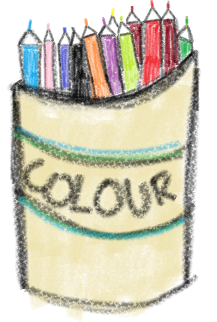

#
The label
A child becomes a category before they have had time to discover who they are. An adult becomes a job title, a number or a milestone.
Our story A field note on becoming
The Wonder Verse began with children’s questions—but it did not begin by observing children alone.
01 Curiosity was never something you were supposed to outgrow.

What I noticed Children, adults and everyone between
Children began arriving with labels already attached: advanced, behind, difficult, distracted, gifted, average. Adults were carrying invisible labels too: successful, late, productive, unmotivated, not enough.
Isha did not only observe how children learned. She noticed how adults were slowly losing their spark in a highly aware, data-based world—a world where everybody seemed informed, optimised and completely certain of where they were going.
From the outside, everyone appeared to have it figured out. From the inside, many people quietly wondered whether they were falling behind.
The modern pressure Measured, labelled, compared
A child becomes a category before they have had time to discover who they are. An adult becomes a job title, a number or a milestone.
We compare our ordinary Tuesday with somebody else’s carefully selected evidence and call ourselves late.
We wait for motivation, Monday, certainty or the perfect plan—then wonder why the life we imagined has not moved.
Your emotions deserve to be understood. They should be listened to with care. But understanding how you feel is not the end of the story; eventually, the next kind thing is to decide what you will do.
A belief at the centre Knowledge must move
“The highest form of knowledge is action.”
You can read every book, save every post and understand every theory. But if you never act on what matters to you—if you sit, criticise, compare or wait for the right time—nothing changes by magic.
You have to show up for yourself, especially when motivation fades. Most of the time, it will.
The action compass Gentle direction, real movement
It starts with an honest decision about what matters and why it deserves a place in your life.
Make a strong, clear decision. A vague wish is difficult to follow.
Name the purpose beneath the goal. Meaning carries you further than mood.
Let small choices point in the same direction, even when the day is imperfect.
Ask whether the goal is still worth keeping—and, if it is, keep showing up.
There is no special Monday holding the courage you do not have today. Begin with what you know, what you have and the smallest honest action available to you now.
A kinder way to grow Not you versus you
Your previous self is not the enemy you must defeat. That version of you survived days you no longer have to survive. They made choices, tried again, rested, failed and showed up when it mattered.
If the previous you had not kept going, the present you would not be standing here.
Thank who you were. Then help who you are becoming.
What school rarely says aloud Your life is not a fixed category
To meet the deeper parts of yourself, stay curious. Stay teachable. Stay childlike enough to ask ridiculous questions, make messy things and begin before you are impressive.
Dear you,
I hope you know that you are not late. You are not a failed version of somebody else. And you are not required to have your entire life beautifully explained before you take the next step.
But I also want to remind you—gently and firmly—that your life needs your participation.
Do not leave every meaningful idea for “someday.” Do not reach the end of your life carrying the ache of the thing you could have begun when you had the chance, the ability and this astonishingly unfinished life in front of you.
Choose something worthy of your effort. Understand why it matters. Make the decision. Then return to it when the motivation disappears, because motivation is a visitor; commitment is the person who stays to help clean up.
You do not need to transform overnight. You only need to stop abandoning yourself in tiny moments.
Start now. Start gently. Start imperfectly. But let this be the day your knowledge becomes movement.
You are already remarkable—not because you have done everything, but because there is still so much life, colour and possibility within you. Please do something with it.
YOUR REMINDER FOR TODAY